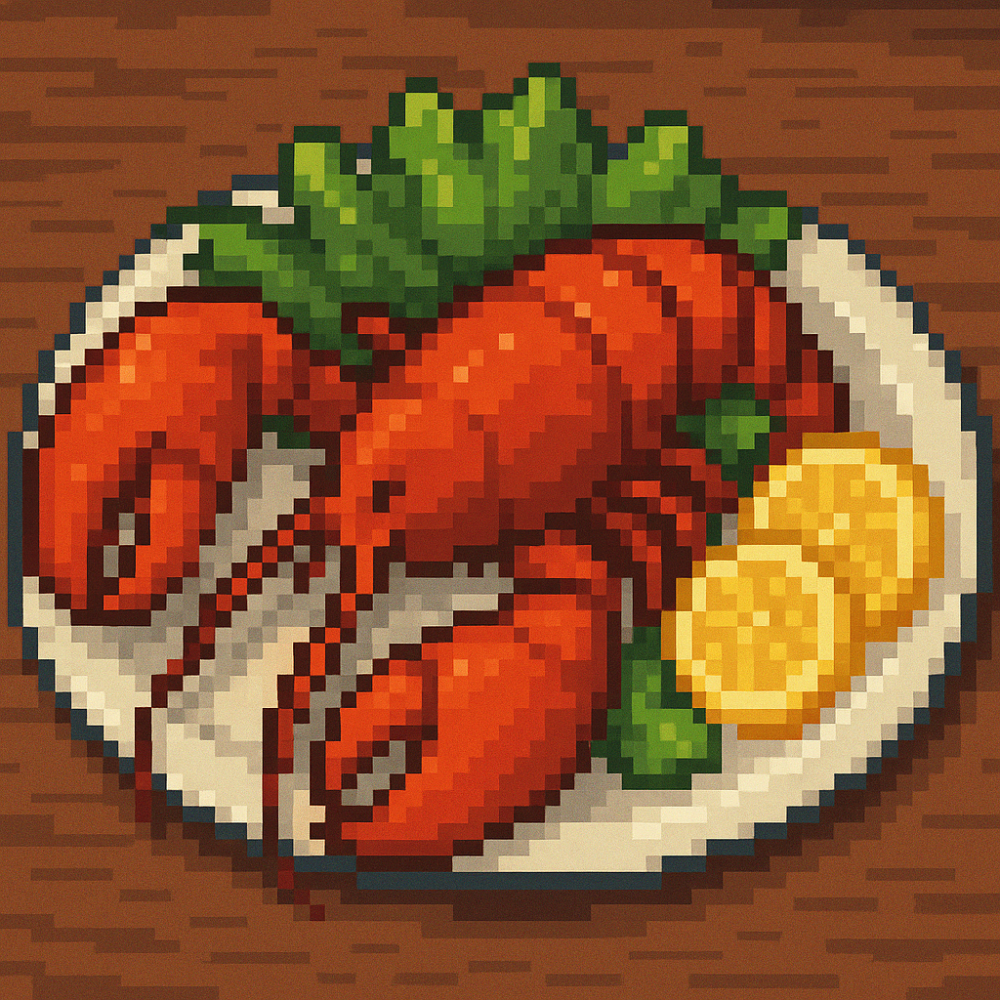
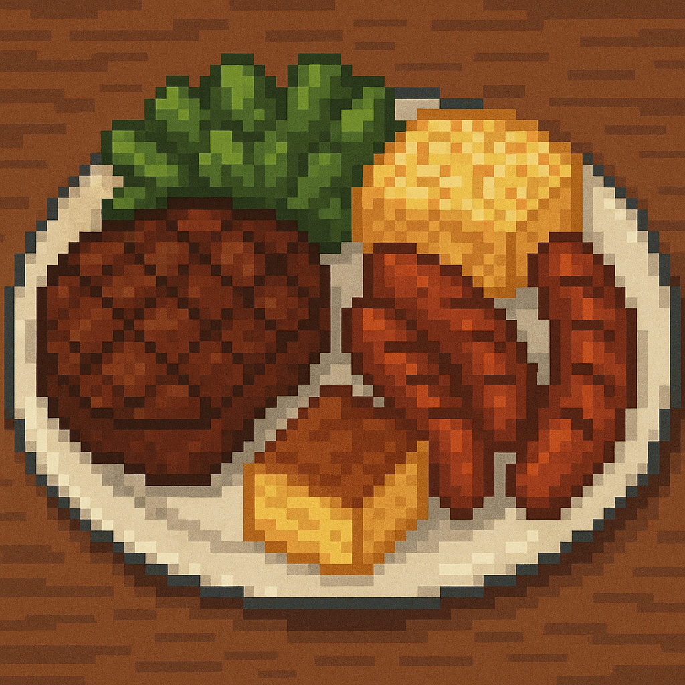
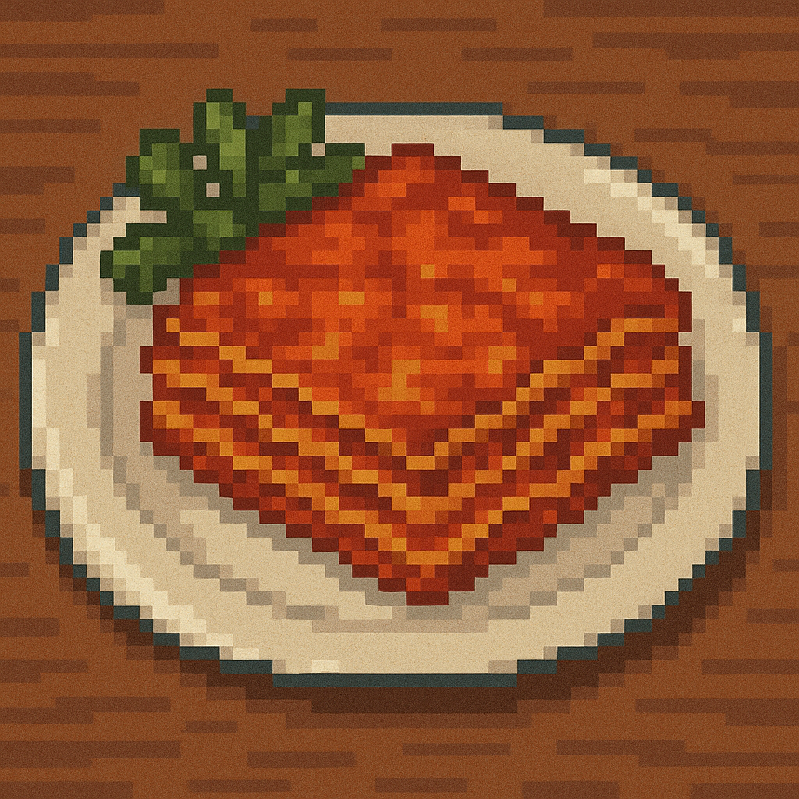
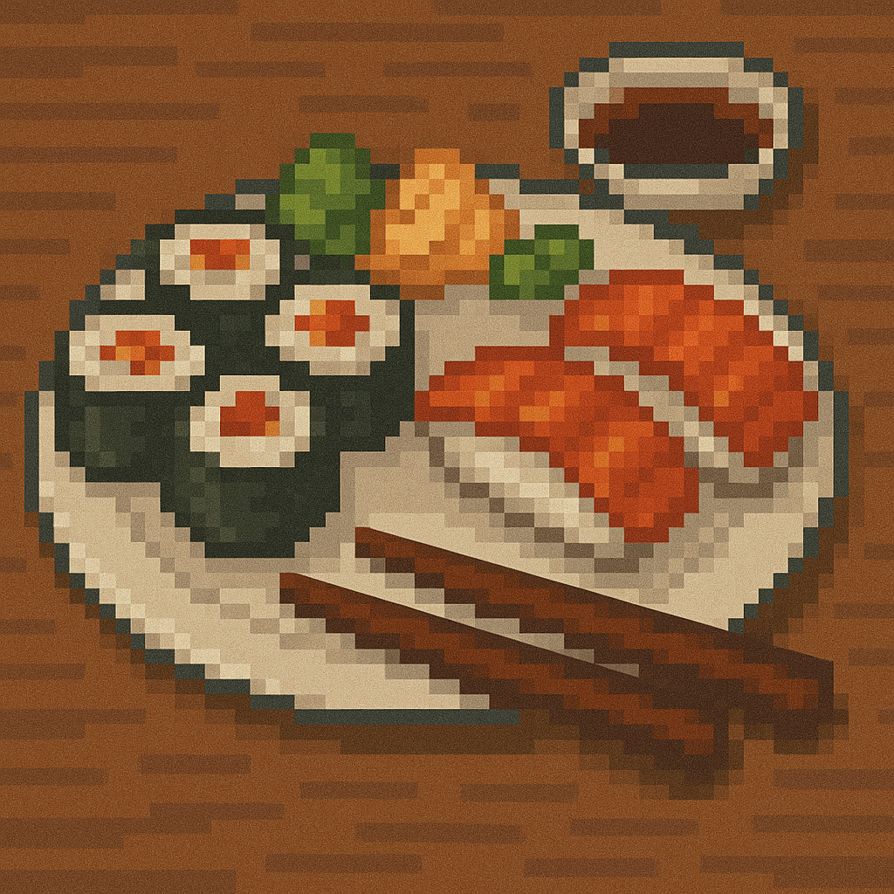
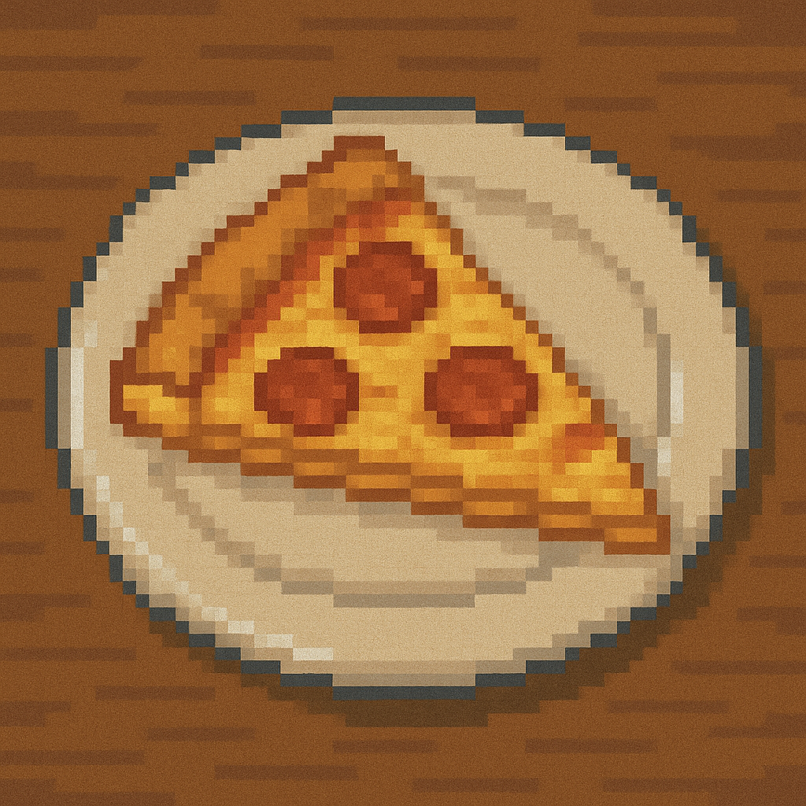

O cardápio dos sonhos!
Olá! Hoje eu vou apresentar à você as deliciosas refeições que são aqui servidas no CEFET!
Antes de começar, tenha certeza de ler o rodapé da página antes e também ao terminar de ver a página dê um clique no prato ao lado ;)
Venha conferir as maravilhas gastronômicas que lhe aguardam durante a sua semana preciosa de estudos!
Cada dia uma nova surpresa para você e seu paladar e é claro, tudo pela pechincha de R$3,20 (ou 3,90 no
futuro)! Pegue seus talheres e venha antes que acabe!
Fora o prato dia, nosso menu também vem com os seguintes acompanhantes:
- Salada completa
- Sucos e refrigerantes
- Diversas frutas
- Bolo e doces de sobremesa
Página 1: Lagosta
Segunda-Feira
Para começar bem a semana, apresento o prato da casa: Lagosta acompanhada de frutos do mar frescos,
pescados ano nosso próprio lago!
Obviamente não se esqueça de antes de comer ter certeza de não ter nenhuma alergia, caso tenha avise-nos
que providenciaremos imediatamente uma substituição para você!

Página 2: Churrasco
Terça-Feira
Já está cansado das suas aulas? tem aula té tarde? Não se preocupe pois nosso churrasco rústico vai te
dar energia até o final da semana!
Picanha? Linguiça? Coração de galinha? Não importa qual a sua carne favorita, nosso churrasco tem de
tudo e do melhor!
Página 3: Massas
Quarta-Feira
Para nossa quarta nós temos o nosso famoso "dia de massas" que deixaria qualquer italiano encantado e
desejando ser nosso aluno!
Nossa cozinha vai preparar para vocês as melhores lasanhas, macarrões e massas que você vai ver em sua
vida, só cuidado com a dieta viu!
Página 4: Comida Japonesa
Quinta-Feira
Gostaria de apresentar a todos os nossos estudantes nosso novo item do cardápio, comidas asiáticas!
Nosso requintado restaurante agora conta com chefes asiáticos para prover do melhor para os nossos
estudantes! Seja sushi, lámen, rolinhos, nosso restaurante tem o
que você deseja!
Página 5: Rodízio de pizzas
Sexta-Feira
E é claro que não posso deixar de falar do mais famoso dia da semana da nossa cozinha! Nosso rodízio de
pizzas do final da semana!
Temos à sua disposição todos os sabores de pizza que você desejar, seja de pepperoni, portuguesa,
calabresa, de frango, desde que não seja de abacaxi nossa cozinha
tem lhe esperando!
Programação da semana
| Comida | Nome | Dia da semana | |
|---|---|---|---|
|  | Lagosta e frutos do mar | Segunda-Feira | |
|  | Churrasco | Terça-Feira | |
|  | Massas | Quarta-Feira | |
|  | Comida japonesa | Quinta-Feira | |
|  | Rodízio de pizzas | Sexta-Feira | |